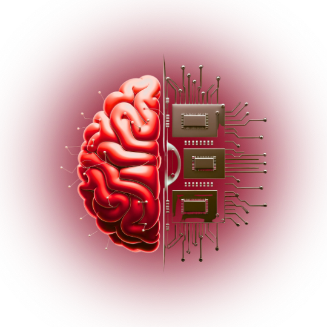

Skills
And
Experience
Computer Science graduate from Charmo University. I work across the full stack — backend systems, web apps, ML pipelines, and social strategy. Comfortable shipping production code and training models that solve real problems.
JavaScript
Python
Java
HTML
CSS
Bootstrap
Tailwind
PHP
MySQL
Git
AI
Machine Learning
AJAX
FireBase
SupaBase
SQL
API
Linux
OpenCV
UI/UX
Computer Vision
Automation
04+
Disciplines
22+
Stack Tools
B.Sc
Computer Science
02
05